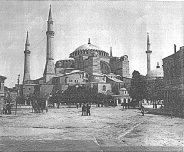

Ayasofya, Konstantinopolis’te, yani bugünkü İstanbul’da İmparator Jüstinyen’in kişisel gözetimi altında bir Hıristiyan katedrali olarak inşa edildi. Kilisenin takdis töreninde Bizans hükümdarının, Eski Ahit’e göre Kudüs’teki ünlü Yahudi tapınağını yaptıran Kral Süleyman’ı geçtiğini iddia ettiği söylenir.

Ayasofya’nın Doğu’nun gizemciliği ile Roma imparatorluk mimarisinin Panteon örneğindeki gibi iddialı ölçülerini birleştirdiği sıklıkla söylenir. 532 ile 537 yılları arasında inşa edilen bu şaheser, mimardan ziyade matematikçi olan Miletli İsidoros ve Trallesli Anthemius tarafından tasarlandı. Kilisenin kubbesi 55 metre yüksekliğindedir ve dört pandantifle, yani yarımkürenin ağırlığını dört paye üzerine eşit olarak dağıtan dört adet üçgen parçayla desteklenmiştir. Kubbenin temelindeki kırk pencere içeri ışık girmesine izin verir ve kubbeyi ağırlığı yokmuş gibi, aşağıda ibadet edenlerin üzerinde süzülüyormuş gibi gösterir. Kilise başlangıçta altın mozaiklerle ve dekoratif motiflerle süslenmişti. Sonradan gelen hükümdarlar, kutsal şahsiyetlerin birçok resmini ekletti.
Yunanca “kutsal bilgeliğin kilisesi” anlamına gelen Ayasofya, yıllarca depremlerden önemli ölçüde zarar gördü. Başlangıçta Bizans imparatorunun şahsi kilisesi olan Ayasofya, Osmanlılar’ın Konstantinopolis’i 1453 yılında işgal etmesinden sonra camiye dönüştürüldü. İnsan resimlerinin İslamiyet tarafından yasaklanmasından dolayı figüratif mozaiklerin üzeri alçıyla kapatıldı. Bugün hâlâ bina içinde görülebilen kaligrafik süslemelerin yanı sıra yapıya dört tane de minare eklendi. 1936’da Mustafa Kemal Atatürk döneminde bina ibadethane olmaktan çıkarıldı ve modern İstanbul’un en fazla turist çeken yerlerinden biri olan Ayasofya Müzesi’ne dönüştürüldü.
1993 yılında UNESCO, Ayasofya’yı tehlike altındaki tarihi alanlar listesine aldı. O zamandan beri binanın temeli güçlendirildi ve eski mozaiklerden çok daha fazlası gün ışığına çıkarıldı.
EK BİLGİLER:
1. Ayasofya, VI. yüzyılın ortalarında Mimarlık Üzerine başlıklı bilimsel bir Bizans eserinde Procopius tarafından en ince ayrıntısına kadar anlatılmıştır.
2. Heliopolis’teki bir Mısır tapınağından Romalılar tarafından alınan porfir sütunlar, Konstantinopolis’e getirilerek Ayasofya’nın inşasında kullanılmıştır.
3. Kilise, 1204’teki Dördüncü Haçlı Seferi sırasında yağmalanmıştır.